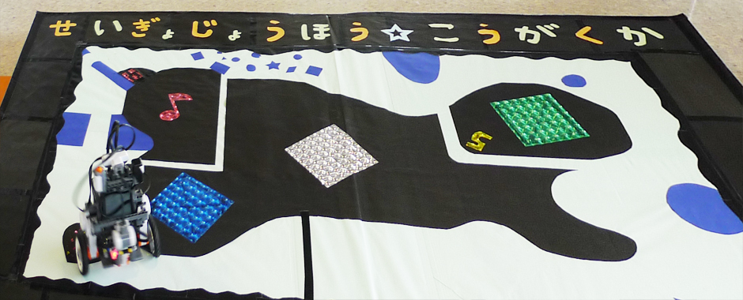
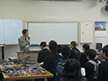
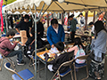
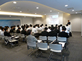

制御情報工学科では、情報通信技術を駆使し、
ロボットの動きを制御できる情報技術者を育成します。
新着情報
2019年12月11日 4S インターンシップ報告会
2019年12月11日，インターンシップ参加者(4年生33名)多数のため発表会場を3つに別け，インターンシップ報告会を開催しました．
2019年12月10日 恩田小学校出前授業
2019年12月10日，恩田小学校(6年生1クラス)にて宇部高専制御情報工学科江原教授が出前授業を行いました．
2019年11月9日 第2回オープンキャンパス

2019年11月9日，第2回オープンキャンパスを開催しました．2019年11月3日 宇部まつり

2019年11月3日，宇部高専は宇部まつりのキャンパス広場にブースを出展しました．2019年10月16日 3S 工場見学研修

2019年10月16日～18日の2泊3日で，東京へ工場見学旅行へ行きました．